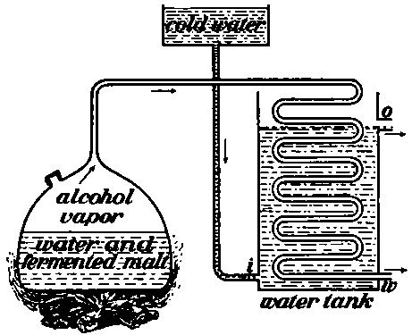
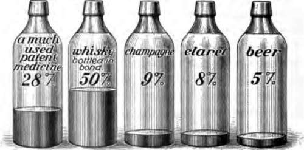

Drink And Health. Continued
Description
This section is from the book "The Human Body And Health", by Alvin Davison. Also available from Amazon: The Human Body and Health.
Drink And Health. Continued
Wine
Wine is called a fermented liquor because it is produced by a fermentation of the juice of such fruits as grapes, berries and cherries. The fermentation is brought about by the wild yeast, commonly present on the surface of fruit. Sugar for the growth of the yeast is in the fruit. Most wine is made from grapes. It usually contains from ten to twenty parts of alcohol. Claret and champagne are weak wines.
Fig. 43. Simple still for distillation of whisky, w, the outlet for the whisky.
In making wine, the grapes are thrown into a large wooden tub. They must then be crushed to make the juice run out. This is sometimes done by men, who walk around on the grapes in bare feet. After this mass has fermented several days the juice is drawn off in bottles.
Whisky And Brandy
These are the strongest of alcoholic drinks. They are about one half pure alcohol. As the yeast plants cannot continue to grow in a solution after one seventh part of it is alcohol, the stronger drinks are made from the weaker solutions by a process called distillation.
Heat changes alcohol into a vapor or steam much quicker than it does water. When the fermented solution containing alcohol and water is heated, the alcohol vapor passes off and is collected and cooled, so as to become a liquid again. This is distillation. In this way whisky is made from corn, rye and barley. Brandy is made from fermented fruit juice in a similar manner.
Patent Medicines
Many of the liquid patent medicines contain more alcohol than is present in beer, and some of them are so strong in alcohol that two or three table-spoonfuls would make a child drunk. Many people have been known to get drunk by using patent medicines, which have fixed on them the terrible alcoholic thirst.
Patent medicines which contain alcohol and other harmful drugs should not be used. The good results, which they occasionally seem to give, is generally due to some stimulant, or to some sleep-producing drugs, which later cause harm. Thousands of lives have been wrecked, and others shortened, by using patent medicines, instead of consulting a physician. Any medicine advertised as a sure cure for several ailments should be regarded as worthless.
Fig. 44. The amount of alcohol in various drinks.
Cider
Some persons who never take other alcoholic drinks use a considerable quantity of cider, without realizing that it contains alcohol. The wild yeast plants, present nearly everywhere, get into the cider when the juice is pressed out of the apples. The yeast will grow so rapidly, that after three days of warm weather, the cider may contain more alcohol than is present in beer. Cider in this condition has a sour and biting taste, and is said to be hard. Two or three glasses of very hard cider are likely to make one drunk. Soon after the cider becomes hard, certain bacteria change the alcohol into vinegar.
Soft Drinks
Soda water, ginger ale, lemon soda and other similar beverages are called soft drinks, because they contain no alcohol. The biting taste is due to carbon dioxide, with which they are charged. They are healthful when used in moderation. Birch beer is not strictly a soft drink, because it contains about one third as much alcohol as other beer.
Alcohol Injures The Health
A few years ago there was organized a committee, composed of fifty business men and scientists, to investigate the results of using beer, wine and whisky. Through careful inquiries, from hundreds of people in different states, they learned that about 1,000,000 men in our country are every year drinking to such excess as to injure their health.
Very few, if any, persons can drink liquor daily for many years, without causing disease in some of the organs. The use of much alcohol often produces disease in the liver, kidneys, heart or other blood vessels, and does lasting injury to the nervous system.
The records of one of the large insurance companies show that those persons not using alcoholic drinks suffer but little over one half as many weeks sickness as the drinkers. Experiments show that alcohol weakens the system, and makes it an easy prey to disease caused by bacteria.
Alcohol Makes Persons Weak
It was once thought that the use of wine and whisky gave strength. Many observations and experiments, lately made, show that they really weaken both mind and body. Actual tests prove that those who use alcoholic beverages cannot lift so heavy a weight, run so fast, or shoot so straight as the total abstainers.
Careful records show that such diseases as pneumonia and tuberculosis are more likely to attack habitual drinkers than those whose bodies are not weakened by alcohol. The persons soonest overcome with cold in winter, and heat in summer are the beer drinkers, and lovers of wine and whisky.
Alcohol Makes People Poor
The one great agent making people homeless and hungry, is strong drink. Records tell in accurate figures, that more than one third of the thousands of poor, living in the almshouses of this country, were brought there by the use of alcoholic drinks.
Inquiry into the cause of the condition of over five thousand homeless children, brought forth the information that over two thousand of them owed their sad state to the use of alcoholic drink by the parents. The habitual drinker not only spends much money for his destroying drink, but renders himself unfit to perform any careful work to earn money.
Alcohol Makes People Wicked
Strong drink often ruins not only the body, but also the character. Many persons who are honest when sober, have been led to steal, and even murder, while under the influence of liquor. Alcohol weakens the will, and lets the evil nature control the man.
Inquiry concerning thirteen hundred convicts in our state prisons and reformatories a few years ago, led to the discovery that alcoholic drink caused a large proportion of these criminals to be guilty of crime. In some of the counties of certain states where the law does not allow the sale of liquor, the jail is empty much of the time.
Danger In Using Alcoholic Drinks
Some persons can take strong drink occasionally without injuring their health. They may, however, do much, harm by leading others to drink, who little by little fasten on themselves the destroying appetite.
A young person who drinks occasionally is much more likely to become intemperate than a person over fifty years of age, because alcohol has a greater effect on the nervous system of the young than the aged. About one in every ten occasional drinkers becomes a drunkard. The habitual use of alcoholic drinks for a few years in youth is almost certain to so weaken the will and to poison the tissues that the user cannot quit drinking without taking special treatment to cure his sick body.
Quick Effect Of Alcohol
Alcohol was once thought to be a stimulant. A stimulant is anything which causes the organs of the body to work faster. Alcohol is now called a narcotic. This is any drug which tends to produce sleepiness and dull pain. A small amount of whisky may cause some of the organs to work more quickly for a few minutes, but for a much longer time it makes the same organs work slower than usual.
Practical Questions
1. Why should we drink much water? 2. What is the danger from impure water? 3. How is water made unsafe? 4. How may any water be made safe for drinking? 5. Does filtering water prevent sickness? 6. Name some drinks containing alcohol. 7. Why do some persons drink liquor? 8. Why is it unwise to use alcoholic drinks? 9. Describe how alcohol is made. 10. What are malt liquors? 11. Describe how wine is made. 12. Describe distillation. 13. Why should persons not use patent medicines? 14. Give facts showing that alcohol injures health. 15. What shows that alcohol makes people weak? 16. State facts showing that alcohol makes people poor. 17. How is it known that alcohol makes persons wicked? 18. What is the danger in using alcoholic drink? 19. What is a stimulant? 20. What is a narcotic?
Suggestions For The Teacher
The fact that a quarter million of our people have died within the last ten years from the use of impure water shows that it is worth while for the teacher to make special inquiries from the pupils as to the source of their drinking water. A brief discussion of the subject may lead to a remedy for the use of unclean cisterns and doubtful wells which will prevent unnecessary sickness and death in the future.
Continue to:
- prev: Chapter VII. Drink And Health
- Table of Contents
- next: Chapter VIII. Tobacco And Other Narcotics And Their Effect On Health